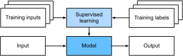
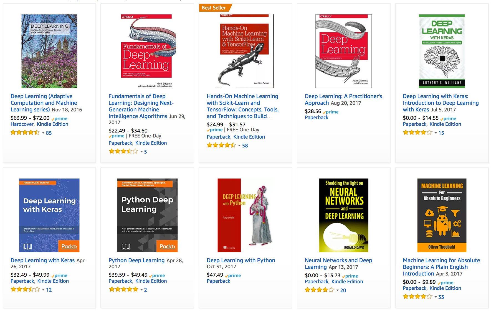
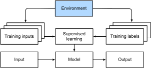
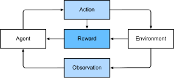

1. Introduction¶
Jusqu’à récemment, presque tous les programmes informatiques avec lesquels vous pouviez interagir au cours d’une journée ordinaire étaient codés comme un ensemble rigide de règles spécifiant précisément comment ils devaient se comporter. Supposons que nous voulions écrire une application pour gérer une plateforme de commerce électronique. Après s’être réunis autour d’un tableau blanc pendant quelques heures pour réfléchir au problème, nous pourrions nous mettre d’accord sur les grandes lignes d’une solution fonctionnelle, par exemple : (i) les utilisateurs interagissent avec l’application via une interface s’exécutant dans un navigateur web ou une application mobile ; (ii) notre application interagit avec un moteur de base de données de qualité commerciale pour suivre l’état de chaque utilisateur et tenir des registres des transactions historiques ; et (iii) au cœur de notre application, la logique métier (on pourrait dire, le cerveau) de notre application énonce un ensemble de règles qui associent chaque circonstance imaginable à l’action correspondante que notre programme doit entreprendre.
Pour construire le cerveau de notre application, nous pourrions énumérer tous les événements courants que notre programme doit gérer. Par exemple, chaque fois qu’un client clique pour ajouter un article à son panier, notre programme doit ajouter une entrée à la table de la base de données du panier d’achat, en associant l’ID de cet utilisateur à l’ID du produit demandé. Nous pourrions ensuite essayer de passer en revue chaque cas particulier possible, en testant la pertinence de nos règles et en apportant les modifications nécessaires. Que se passe-t-il si un utilisateur initie un achat avec un panier vide ? Bien que peu de développeurs y parviennent parfaitement du premier coup (il faudra peut-être quelques cycles de test pour régler les problèmes), nous pouvons pour la plupart écrire de tels programmes et les lancer en toute confiance avant même d’avoir vu un vrai client. Notre capacité à concevoir manuellement des systèmes automatisés qui pilotent des produits et des systèmes fonctionnels, souvent dans des situations inédites, est une prouesse cognitive remarquable. Et lorsque vous êtes en mesure de concevoir des solutions qui fonctionnent à \(100\%\), vous ne devriez généralement pas vous soucier d’apprentissage automatique.
Heureusement pour la communauté grandissante des chercheurs en apprentissage automatique, de nombreuses tâches que nous aimerions automatiser ne se plient pas si facilement à l’ingéniosité humaine. Imaginez-vous réunis autour du tableau blanc avec les esprits les plus brillants que vous connaissiez, mais cette fois, vous vous attaquez à l’un des problèmes suivants :
Écrire un programme qui prédit la météo de demain à partir d’informations géographiques, d’images satellites et d’une fenêtre temporelle des conditions météorologiques passées.
Écrire un programme qui prend une question factuelle, exprimée en texte libre, et y répond correctement.
Écrire un programme qui, à partir d’une image, identifie chaque personne représentée et dessine ses contours.
Écrire un programme qui présente aux utilisateurs des produits qu’ils sont susceptibles d’apprécier mais qu’ils risquent peu, au cours de leur navigation naturelle, de rencontrer.
Pour ces problèmes, même les programmeurs d’élite auraient du mal à coder des solutions à partir de zéro. Les raisons peuvent varier. Parfois, le programme que nous recherchons suit un modèle qui change au fil du temps, il n’y a donc pas de réponse fixe correcte ! Dans de tels cas, toute solution réussie doit s’adapter gracieusement à un monde en mutation. D’autres fois, la relation (par exemple entre les pixels et les catégories abstraites) peut être trop complexe, nécessitant des milliers ou des millions de calculs et suivant des principes inconnus. Dans le cas de la reconnaissance d’images, les étapes précises requises pour effectuer la tâche échappent à notre compréhension consciente, même si nos processus cognitifs inconscients exécutent la tâche sans effort.
L’apprentissage automatique (machine learning) est l’étude des algorithmes qui peuvent apprendre de l’expérience. À mesure qu’un algorithme d’apprentissage automatique accumule de l’expérience, généralement sous la forme de données d’observation ou d’interactions avec un environnement, ses performances s’améliorent. Contrastez cela avec notre plateforme de commerce électronique déterministe, qui suit la même logique métier, peu importe l’expérience acquise, jusqu’à ce que les développeurs eux-mêmes apprennent et décident qu’il est temps de mettre à jour le logiciel. Dans ce livre, nous vous enseignerons les fondamentaux de l’apprentissage automatique, en nous concentrant en particulier sur l’apprentissage profond (deep learning), un ensemble de techniques puissantes stimulant l’innovation dans des domaines aussi divers que la vision par ordinateur, le traitement du langage naturel, la santé et la génomique.
1.1. Un exemple motivant¶
Avant de commencer à écrire, les auteurs de ce livre, comme une grande partie de la population active, ont dû se caféiner. Nous avons sauté dans la voiture et avons commencé à conduire. À l’aide d’un iPhone, Alex a crié « Dis Siri », réveillant le système de reconnaissance vocale du téléphone. Ensuite, Mu a ordonné « itinéraire vers le café Blue Bottle ». Le téléphone a rapidement affiché la transcription de sa commande. Il a également reconnu que nous demandions un itinéraire et a lancé l’application (app) Plans pour répondre à notre demande. Une fois lancée, l’application Plans a identifié un certain nombre d’itinéraires. À côté de chaque itinéraire, le téléphone affichait un temps de trajet prévu. Bien que cette histoire ait été inventée pour des raisons pédagogiques, elle démontre qu’en l’espace de quelques secondes seulement, nos interactions quotidiennes avec un smartphone peuvent solliciter plusieurs modèles d’apprentissage automatique.
Imaginez simplement écrire un programme pour répondre à un mot de réveil (wake word) tel que « Alexa », « OK Google » et « Dis Siri ». Essayez de le coder seul dans une pièce avec rien d’autre qu’un ordinateur et un éditeur de code, comme illustré dans Fig. 1.1.1. Comment écririez-vous un tel programme à partir de principes fondamentaux ? Réfléchissez-y… le problème est difficile. Chaque seconde, le microphone collectera environ 44 000 échantillons. Chaque échantillon est une mesure de l’amplitude de l’onde sonore. Quelle règle pourrait permettre de passer de manière fiable d’un extrait audio brut à des prédictions confiantes \(\{\textrm{oui}, \textrm{non}\}\) quant à savoir si l’extrait contient le mot de réveil ? Si vous êtes bloqué, ne vous inquiétez pas. Nous ne savons pas non plus comment écrire un tel programme à partir de zéro. C’est pourquoi nous utilisons l’apprentissage automatique.
Fig. 1.1.1 Identifier un mot de réveil.¶
Voici l’astuce. Souvent, même lorsque nous ne savons pas comment dire explicitement à un ordinateur comment passer des entrées aux sorties, nous sommes néanmoins capables de réaliser nous-mêmes cette prouesse cognitive. En d’autres termes, même si vous ne savez pas comment programmer un ordinateur pour reconnaître le mot « Alexa », vous êtes vous-même capable de le reconnaître. Forts de cette capacité, nous pouvons collecter un immense jeu de données (dataset) contenant des exemples d’extraits audio et les étiquettes (labels) associées, indiquant quels extraits contiennent le mot de réveil. Dans l’approche actuellement dominante de l’apprentissage automatique, nous n’essayons pas de concevoir un système explicitement pour reconnaître les mots de réveil. Au lieu de cela, nous définissons un programme flexible dont le comportement est déterminé par un certain nombre de paramètres. Ensuite, nous utilisons le jeu de données pour déterminer les meilleures valeurs de paramètres possibles, c’est-à-dire celles qui améliorent les performances de notre programme par rapport à une mesure de performance choisie.
Vous pouvez considérer les paramètres comme des boutons que nous pouvons tourner, manipulant le comportement du programme. Une fois les paramètres fixés, nous appelons le programme un modèle. L’ensemble de tous les programmes distincts (correspondances entrée-sortie) que nous pouvons produire simplement en manipulant les paramètres est appelé une famille de modèles. Et le « méta-programme » qui utilise notre jeu de données pour choisir les paramètres est appelé un algorithme d’apprentissage.
Avant de pouvoir lancer l’algorithme d’apprentissage, nous devons définir le problème précisément, en fixant la nature exacte des entrées et des sorties, et en choisissant une famille de modèles appropriée. Dans ce cas, notre modèle reçoit un extrait audio comme entrée, et le modèle génère une sélection parmi \(\{\textrm{oui}, \textrm{non}\}\) comme sortie. Si tout se passe comme prévu, les suppositions du modèle seront généralement correctes quant à savoir si l’extrait contient le mot de réveil.
Si nous choisissons la bonne famille de modèles, il devrait exister un réglage des boutons tel que le modèle réponde « oui » chaque fois qu’il entend le mot « Alexa ». Parce que le choix exact du mot de réveil est arbitraire, nous aurons probablement besoin d’une famille de modèles suffisamment riche pour que, via un autre réglage des boutons, elle puisse répondre « oui » uniquement après avoir entendu le mot « Abricot ». Nous nous attendons à ce que la même famille de modèles soit adaptée pour la reconnaissance d’« Alexa » et d’« Abricot » car il s’agit, intuitivement, de tâches similaires. Cependant, nous pourrions avoir besoin d’une famille de modèles entièrement différente si nous voulions traiter des entrées ou des sorties fondamentalement différentes, par exemple si nous voulions passer des images aux légendes, ou des phrases anglaises aux phrases chinoises.
Comme vous pouvez le deviner, si nous réglons simplement tous les boutons au hasard, il est peu probable que notre modèle reconnaisse « Alexa », « Abricot » ou tout autre mot anglais. En apprentissage automatique, l’apprentissage est le processus par lequel nous découvrons le bon réglage des boutons pour obtenir le comportement souhaité de notre modèle. En d’autres termes, nous entrainons notre modèle avec des données. Comme le montre Fig. 1.1.2, le processus d’entraînement ressemble généralement à ce qui suit :
Commencer avec un modèle initialisé de manière aléatoire qui ne sait rien faire d’utile.
Récupérer certaines de vos données (par exemple, des extraits audio et les étiquettes \(\{\textrm{oui}, \textrm{non}\}\) correspondantes).
Ajuster les boutons pour que le modèle soit plus performant, tel qu’évalué sur ces exemples.
Répéter les étapes 2 et 3 jusqu’à ce que le modèle soit excellent.

Fig. 1.1.2 Un processus d’entraînement typique.¶
En résumé, plutôt que de coder un système de reconnaissance de mots de réveil, nous codons un programme capable d’apprendre à reconnaître les mots de réveil, s’il dispose d’un grand jeu de données étiqueté. Vous pouvez considérer cet acte consistant à déterminer le comportement d’un programme en lui présentant un jeu de données comme une programmation par les données. C’est-à-dire que nous pouvons « programmer » un détecteur de chats en fournissant à notre système d’apprentissage automatique de nombreux exemples de chats et de chiens. De cette façon, le détecteur finira par apprendre à émettre un très grand nombre positif s’il s’agit d’un chat, un très grand nombre négatif s’il s’agit d’un chien, et quelque chose de proche de zéro s’il n’est pas sûr. Cela effleure à peine la surface de ce que l’apprentissage automatique peut faire. L’apprentissage profond, que nous expliquerons plus en détail plus tard, n’est qu’une des nombreuses méthodes populaires pour résoudre des problèmes d’apprentissage automatique.
1.2. Composants clés¶
Dans notre exemple de mot de réveil, nous avons décrit un jeu de données composé d’extraits audio et d’étiquettes binaires, et nous avons donné une idée intuitive de la façon dont nous pourrions entraîner un modèle pour approximer une correspondance entre des extraits et des classifications. Ce type de problème, où nous essayons de prédire une étiquette inconnue désignée sur la base d’entrées connues à partir d’un jeu de données composé d’exemples pour lesquels les étiquettes sont connues, est appelé apprentissage supervisé. Ce n’est qu’un des nombreux types de problèmes d’apprentissage automatique. Avant d’explorer d’autres variétés, nous aimerions éclairer davantage certains composants de base qui nous suivront, quel que soit le type de problème d’apprentissage automatique que nous abordons :
Les données dont nous pouvons apprendre.
Un modèle sur la façon de transformer les données.
Une fonction objectif qui quantifie la performance (bonne ou mauvaise) du modèle.
Un algorithme pour ajuster les paramètres du modèle afin d’optimiser la fonction objectif.
1.2.1. Données¶
Il va sans dire qu’on ne peut pas faire de science des données sans données. Nous pourrions perdre des centaines de pages à réfléchir à ce que sont précisément les données, mais pour l’instant, nous nous concentrerons sur les propriétés clés des jeux de données qui nous intéresseront. Généralement, nous nous intéressons à une collection d’exemples. Pour travailler utilement avec les données, nous devons généralement trouver une représentation numérique appropriée. Chaque exemple (ou point de données, instance de données, échantillon) consiste généralement en un ensemble d’attributs appelés caractéristiques (features, parfois appelées covariables ou entrées), sur la base desquels le modèle doit faire ses prédictions. Dans les problèmes d’apprentissage supervisé, notre objectif est de prédire la valeur d’un attribut spécial, appelé l’étiquette (label, ou cible), qui ne fait pas partie de l’entrée du modèle.
Si nous travaillions avec des données d’image, chaque exemple pourrait consister en une photographie individuelle (les caractéristiques) et un nombre indiquant la catégorie à laquelle appartient la photographie (l’étiquette). La photographie serait représentée numériquement sous la forme de trois grilles de valeurs numériques représentant la luminosité de la lumière rouge, verte et bleue à chaque emplacement de pixel. Par exemple, une photographie couleur de \(200\times 200\) pixels serait composée de \(200\times200\times3=120000\) valeurs numériques.
Alternativement, nous pourrions travailler avec des données de dossiers de santé électroniques et nous attaquer à la tâche de prédire la probabilité qu’un patient donné survive aux 30 prochains jours. Ici, nos caractéristiques pourraient consister en une collection d’attributs facilement disponibles et de mesures fréquemment enregistrées, notamment l’âge, les signes vitaux, les comorbidités, les médicaments actuels et les procédures récentes. L’étiquette disponible pour l’entraînement serait une valeur binaire indiquant si chaque patient dans les données historiques a survécu dans la fenêtre de 30 jours.
Dans de tels cas, lorsque chaque exemple est caractérisé par le même nombre de caractéristiques numériques, nous disons que les entrées sont des vecteurs de longueur fixe et nous appelons la longueur (constante) des vecteurs la dimensionnalité des données. Comme vous pouvez l’imaginer, des entrées de longueur fixe peuvent être pratiques, nous donnant une complication de moins à gérer. Cependant, toutes les données ne peuvent pas être facilement représentées comme des vecteurs de longueur fixe. Bien que nous puissions nous attendre à ce que les images de microscope proviennent d’un équipement standard, nous ne pouvons pas nous attendre à ce que les images extraites d’Internet aient toutes la même résolution ou la même forme. Pour les images, nous pourrions envisager de les recadrer à une taille standard, mais cette stratégie ne nous mène qu’à un certain point. Nous risquons de perdre des informations dans les parties recadrées. De plus, les données textuelles résistent encore plus obstinément aux représentations de longueur fixe. Considérez les avis clients laissés sur des sites de commerce électronique tels qu’Amazon, IMDb et TripAdvisor. Certains sont courts : « ça pue ! ». D’autres s’étalent sur des pages. Un avantage majeur de l’apprentissage profond par rapport aux méthodes traditionnelles est la grâce comparative avec laquelle les modèles modernes peuvent gérer des données de longueur variable.
D’une manière générale, plus nous avons de données, plus notre travail devient facile. Lorsque nous avons plus de données, nous pouvons entraîner des modèles plus puissants et moins nous appuyer sur des hypothèses préconçues. Le changement de régime passant de données (comparativement) petites à de grandes données est un contributeur majeur au succès de l’apprentissage profond moderne. Pour bien faire comprendre ce point, beaucoup des modèles les plus passionnants de l’apprentissage profond ne fonctionnent pas sans de grands jeux de données. Certains autres pourraient fonctionner dans le régime de petites données, mais ne valent pas mieux que les approches traditionnelles.
Enfin, il ne suffit pas d’avoir beaucoup de données et de les traiter intelligemment. Nous avons besoin des bonnes données. Si les données sont pleines d’erreurs, ou si les caractéristiques choisies ne sont pas prédictives de la quantité cible d’intérêt, l’apprentissage va échouer. La situation est bien résumée par le cliché : garbage in, garbage out (déchets en entrée, déchets en sortie). De plus, une mauvaise performance prédictive n’est pas la seule conséquence potentielle. Dans les applications sensibles de l’apprentissage automatique, comme la police prédictive, le tri de CV, et les modèles de risque utilisés pour le prêt, nous devons être particulièrement attentifs aux conséquences des données de mauvaise qualité (garbage data). Un mode de défaillance courant concerne les jeux de données où certains groupes de personnes ne sont pas représentés dans les données d’entraînement. Imaginez l’application d’un système de reconnaissance du cancer de la peau qui n’aurait jamais vu de peau noire auparavant. L’échec peut également survenir lorsque les données ne font pas que sous-représenter certains groupes mais reflètent des préjugés sociétaux. Par exemple, si les décisions d’embauche passées sont utilisées pour entraîner un modèle prédictif qui sera utilisé pour filtrer les CV, alors les modèles d’apprentissage automatique pourraient par inadvertance capturer et automatiser les injustices historiques. Notez que tout cela peut se produire sans que le scientifique des données ne conspire activement, ou même n’en soit conscient.
1.2.2. Modèles¶
La plupart des apprentissages automatiques impliquent de transformer les données dans un certain sens. Nous pourrions vouloir construire un système qui ingère des photos et prédit le caractère souriant. Alternativement, nous pourrions vouloir ingérer un ensemble de lectures de capteurs et prédire à quel point les lectures sont normales ou anormales. Par modèle, nous désignons la machinerie informatique permettant d’ingérer des données d’un type, et de cracher des prédictions d’un type éventuellement différent. En particulier, nous nous intéressons aux modèles statistiques qui peuvent être estimés à partir de données. Bien que des modèles simples soient parfaitement capables de traiter des problèmes de complexité appropriée, les problèmes sur lesquels nous nous concentrons dans ce livre repoussent les limites des méthodes classiques. L’apprentissage profond se différencie des approches classiques principalement par l’ensemble de modèles puissants sur lesquels il se concentre. Ces modèles consistent en de nombreuses transformations successives des données qui sont enchaînées de haut en bas, d’où le nom d’apprentissage profond. En chemin vers la discussion des modèles profonds, nous aborderons également certaines méthodes plus traditionnelles.
1.2.3. Fonctions objectifs¶
Plus tôt, nous avons présenté l’apprentissage automatique comme un apprentissage par l’expérience. Par apprentissage ici, nous entendons s’améliorer dans une tâche donnée au fil du temps. Mais qui peut dire ce qui constitue une amélioration ? Vous pourriez imaginer que nous pourrions proposer de mettre à jour notre modèle, et que certaines personnes pourraient ne pas être d’accord sur le fait que notre proposition constitue une amélioration ou non.
Afin de développer un système mathématique formel de machines apprenantes, nous devons avoir des mesures formelles de la qualité (bonne ou mauvaise) de nos modèles. En apprentissage automatique, et en optimisation plus généralement, nous les appelons fonctions objectifs. Par convention, nous définissons généralement les fonctions objectifs de sorte que plus elles sont basses, mieux c’est. Il s’agit simplement d’une convention. Vous pouvez prendre n’importe quelle fonction pour laquelle plus elle est élevée, mieux c’est, et la transformer en une nouvelle fonction qui est qualitativement identique mais pour laquelle plus elle est basse, mieux c’est en inversant le signe. Parce que nous choisissons qu’une valeur plus basse soit meilleure, ces fonctions sont parfois appelées fonctions de perte (loss functions).
Lorsqu’on essaie de prédire des valeurs numériques, la fonction de perte la plus courante est l’erreur quadratique (squared error), c’est-à-dire le carré de la différence entre la prédiction et la cible réelle (ground truth). Pour la classification, l’objectif le plus courant est de minimiser le taux d’erreur, c’est-à-dire la fraction d’exemples sur lesquels nos prédictions ne sont pas d’accord avec la vérité terrain. Certains objectifs (par exemple, l’erreur quadratique) sont faciles à optimiser, tandis que d’autres (par exemple, le taux d’erreur) sont difficiles à optimiser directement, en raison de la non-différentiabilité ou d’autres complications. Dans ces cas, il est courant d’optimiser à la place un objectif substitut (surrogate objective).
Pendant l’optimisation, nous considérons la perte comme une fonction des paramètres du modèle, et traitons le jeu de données d’entraînement comme une constante. Nous apprenons les meilleures valeurs des paramètres de notre modèle en minimisant la perte subie sur un ensemble composé d’un certain nombre d’exemples collectés pour l’entraînement. Cependant, réussir sur les données d’entraînement ne garantit pas que nous réussirons sur des données invisibles. Nous voudrons donc généralement diviser les données disponibles en deux partitions : le jeu de données d’entraînement (ou ensemble d’entraînement), pour l’apprentissage des paramètres du modèle ; et le jeu de données de test (ou ensemble de test), qui est conservé pour l’évaluation. Au bout du compte, nous indiquons généralement comment nos modèles se comportent sur les deux partitions. Vous pourriez considérer la performance à l’entraînement comme analogue aux notes qu’un étudiant obtient aux examens d’entraînement utilisés pour se préparer à un véritable examen final. Même si les résultats sont encourageants, cela ne garantit pas la réussite à l’examen final. Au cours de l’étude, l’étudiant pourrait commencer à mémoriser les questions d’entraînement, semblant maîtriser le sujet mais faiblissant face à des questions jamais vues auparavant lors de l’examen final proprement dit. Lorsqu’un modèle fonctionne bien sur l’ensemble d’entraînement mais ne parvient pas à se généraliser à des données invisibles, nous disons qu’il fait du sur-apprentissage (overfitting) sur les données d’entraînement.
1.2.4. Algorithmes d’optimisation¶
Une fois que nous avons une source et une représentation de données, un modèle et une fonction objectif bien définie, nous avons besoin d’un algorithme capable de rechercher les meilleurs paramètres possibles pour minimiser la fonction de perte. Les algorithmes d’optimisation populaires pour l’apprentissage profond sont basés sur une approche appelée descente de gradient (gradient descent). En résumé, à chaque étape, cette méthode vérifie, pour chaque paramètre, comment cette perte de l’ensemble d’entraînement changerait si vous perturbiez ce paramètre d’une infime quantité. Elle mettrait ensuite à jour le paramètre dans la direction qui réduit la perte.
1.3. Types de problèmes d’apprentissage automatique¶
Le problème du mot de réveil dans notre exemple motivant n’est que l’un des nombreux problèmes que l’apprentissage automatique peut aborder. Pour motiver davantage le lecteur et nous fournir un langage commun qui nous suivra tout au long du livre, nous donnons maintenant un large aperçu du paysage des problèmes d’apprentissage automatique.
1.3.1. Apprentissage supervisé¶
L’apprentissage supervisé décrit les tâches où l’on nous donne un jeu de données contenant à la fois des caractéristiques et des étiquettes et où on nous demande de produire un modèle qui prédit les étiquettes lorsqu’on lui donne des caractéristiques d’entrée. Chaque paire caractéristique–étiquette est appelée un exemple. Parfois, lorsque le contexte est clair, nous pouvons utiliser le terme exemples pour désigner une collection d’entrées, même lorsque les étiquettes correspondantes sont inconnues. La supervision entre en jeu parce que, pour choisir les paramètres, nous (les superviseurs) fournissons au modèle un jeu de données composé d’exemples étiquetés. En termes probabilistes, nous sommes généralement intéressés par l’estimation de la probabilité conditionnelle d’une étiquette étant donné les caractéristiques d’entrée. Bien qu’il ne s’agisse que d’un paradigme parmi d’autres, l’apprentissage supervisé représente la majorité des applications réussies de l’apprentissage automatique dans l’industrie. C’est en partie parce que de nombreuses tâches importantes peuvent être décrites de manière nette comme l’estimation de la probabilité de quelque chose d’inconnu étant donné un ensemble particulier de données disponibles :
Prédire cancer contre pas de cancer, à partir d’une image de tomographie par ordinateur.
Prédire la traduction correcte en français, étant donné une phrase en anglais.
Prédire le prix d’une action le mois prochain sur la base des données de rapports financiers de ce mois-ci.
Bien que tous les problèmes d’apprentissage supervisé soient capturés par la description simple « prédire les étiquettes étant donné les caractéristiques d’entrée », l’apprentissage supervisé lui-même peut prendre diverses formes et nécessiter des tonnes de décisions de modélisation, en fonction (entre autres considérations) du type, de la taille et de la quantité des entrées et des sorties. Par exemple, nous utilisons différents modèles pour traiter des séquences de longueurs arbitraires et des représentations vectorielles de longueur fixe. Nous examinerons bon nombre de ces problèmes en profondeur tout au long de ce livre.
Informellement, le processus d’apprentissage ressemble à ce qui suit. Tout d’abord, récupérez une grande collection d’exemples pour lesquels les caractéristiques sont connues et sélectionnez parmi eux un sous-ensemble aléatoire, en acquérant les étiquettes réelles (ground truth) pour chacun. Parfois, ces étiquettes peuvent être des données disponibles qui ont déjà été collectées (par exemple, un patient est-il décédé au cours de l’année suivante ?) et d’autres fois, nous pouvons avoir besoin d’employer des annotateurs humains pour étiqueter les données (par exemple, assigner des images à des catégories). Ensemble, ces entrées et les étiquettes correspondantes constituent l’ensemble d’entraînement. Nous injectons le jeu de données d’entraînement dans un algorithme d’apprentissage supervisé, une fonction qui prend en entrée un jeu de données et produit en sortie une autre fonction : le modèle appris. Enfin, nous pouvons injecter des entrées jamais vues auparavant dans le modèle appris, en utilisant ses sorties comme prédictions de l’étiquette correspondante. Le processus complet est dessiné dans Fig. 1.3.1.

Fig. 1.3.1 Apprentissage supervisé.¶
1.3.1.1. Régression¶
La tâche d’apprentissage supervisé la plus simple à appréhender est peut-être la régression. Considérez, par exemple, un ensemble de données récoltées dans une base de données de ventes de maisons. Nous pourrions construire un tableau, dans lequel chaque ligne correspond à une maison différente, et chaque colonne correspond à un attribut pertinent, tel que la surface en pieds carrés d’une maison, le nombre de chambres, le nombre de salles de bain, et le nombre de minutes (à pied) jusqu’au centre-ville. Dans ce jeu de données, chaque exemple serait une maison spécifique, et le vecteur de caractéristiques correspondant serait une ligne du tableau. Si vous vivez à New York ou à San Francisco, et que vous n’êtes pas le PDG d’Amazon, Google, Microsoft ou Facebook, le vecteur de caractéristiques (surface, nombre de chambres, nombre de salles de bain, distance à pied) pour votre maison pourrait ressembler à : \([600, 1, 1, 60]\). Cependant, si vous vivez à Pittsburgh, il pourrait ressembler davantage à \([3000, 4, 3, 10]\). Des vecteurs de caractéristiques de longueur fixe comme celui-ci sont essentiels pour la plupart des algorithmes d’apprentissage automatique classiques.
Ce qui fait d’un problème une régression est en fait la forme de la cible. Supposons que vous soyez à la recherche d’une nouvelle maison. Vous voudrez peut-être estimer la juste valeur marchande d’une maison, compte tenu de certaines caractéristiques comme celles mentionnées ci-dessus. Les données ici pourraient consister en des annonces immobilières historiques et les étiquettes pourraient être les prix de vente observés. Lorsque les étiquettes prennent des valeurs numériques arbitraires (même dans un certain intervalle), nous appelons cela un problème de régression. L’objectif est de produire un modèle dont les prédictions se rapprochent étroitement des valeurs d’étiquettes réelles.
De nombreux problèmes pratiques sont facilement décrits comme des problèmes de régression. Prédire la note qu’un utilisateur attribuera à un film peut être considéré comme un problème de régression et si vous avez conçu un excellent algorithme pour accomplir cet exploit en 2009, vous auriez pu gagner le prix Netflix d’un million de dollars. Prédire la durée du séjour des patients à l’hôpital est également un problème de régression. Une bonne règle de base est que tout problème du type combien ? est susceptible d’être une régression. Par exemple :
Combien d’heures durera cette chirurgie ?
Quelle quantité de pluie cette ville recevra-t-elle au cours des six prochaines heures ?
Même si vous n’avez jamais travaillé avec l’apprentissage automatique auparavant, vous avez probablement déjà résolu informellement un problème de régression. Imaginez, par exemple, que vous ayez fait réparer vos canalisations et que votre entrepreneur ait passé 3 heures à enlever la saleté de vos tuyaux d’égout. Ensuite, ils vous ont envoyé une facture de 350 dollars. Imaginez maintenant que votre ami ait embauché le même entrepreneur pendant 2 heures et ait reçu une facture de 250 dollars. Si quelqu’un vous demandait alors à quoi s’attendre sur sa prochaine facture de nettoyage vous pourriez faire des suppositions raisonnables, par exemple que plus d’heures travaillées coûtent plus de dollars. Vous pourriez également supposer qu’il y a des frais de base et que l’entrepreneur facture ensuite à l’heure. Si ces hypothèses se vérifiaient, alors compte tenu de ces deux exemples de données, vous pourriez déjà identifier la structure de prix de l’entrepreneur : 100 dollars par heure plus 50 dollars pour se présenter chez vous. Si vous avez suivi jusque-là, alors vous comprenez déjà l’idée de haut niveau derrière la régression linéaire.
Dans ce cas, nous pourrions produire les paramètres qui correspondent exactement aux prix de l’entrepreneur. Parfois, cela n’est pas possible, par exemple si une partie de la variation provient de facteurs allant au-delà de vos deux caractéristiques. Dans ces cas, nous essaierons d’apprendre des modèles qui minimisent la distance entre nos prédictions et les valeurs observées. Dans la plupart de nos chapitres, nous nous concentrerons sur la minimisation de la fonction de perte par erreur quadratique. Comme nous le verrons plus tard, cette perte correspond à l’hypothèse que nos données ont été corrompues par un bruit gaussien.
1.3.1.2. Classification¶
Alors que les modèles de régression sont excellents pour répondre aux questions du type combien ?, beaucoup de problèmes ne rentrent pas confortablement dans ce modèle. Considérez, par exemple, une banque qui veut développer une fonction de numérisation de chèques pour son application mobile. Idéalement, le client prendrait simplement une photo d’un chèque et l’application reconnaîtrait automatiquement le texte de l’image. En supposant que nous ayons une certaine capacité à segmenter des patchs d’image correspondant à chaque caractère manuscrit, la tâche principale restante serait alors de déterminer quel caractère parmi un ensemble connu est représenté dans chaque patch d’image. Ce genre de problèmes de type lequel ? est appelé classification et nécessite un ensemble d’outils différent de ceux utilisés pour la régression, bien que de nombreuses techniques soient transférables.
En classification, nous voulons que notre modèle examine des caractéristiques, par exemple les valeurs de pixels d’une image, puis prédise à quelle catégorie (parfois appelée une classe) parmi un ensemble discret d’options, appartient un exemple. Pour les chiffres manuscrits, nous pourrions avoir dix classes, correspondant aux chiffres de 0 à 9. La forme la plus simple de classification est lorsqu’il n’y a que deux classes, un problème que nous appelons classification binaire. Par exemple, notre jeu de données pourrait être composé d’images d’animaux et nos étiquettes pourraient être les classes \(\textrm{\{chat, chien\}}\). Alors qu’en régression nous cherchions un régresseur pour produire une valeur numérique, en classification nous cherchions un classificateur, dont la sortie est l’affectation de classe prédite.
Pour des raisons que nous aborderons au fur et à mesure que le livre deviendra plus technique, il peut être difficile d’optimiser un modèle qui ne peut produire qu’une affectation catégorielle ferme, par exemple « chat » ou « chien ». Dans ces cas, il est généralement beaucoup plus facile d’exprimer notre modèle dans le langage des probabilités. Étant donné les caractéristiques d’un exemple, notre modèle attribue une probabilité à chaque classe possible. Pour en revenir à notre exemple de classification d’animaux où les classes sont \(\textrm{\{chat, chien\}}\), un classificateur pourrait voir une image et produire la probabilité que l’image soit un chat de 0,9. Nous pouvons interpréter ce nombre en disant que le classificateur est sûr à 90 % que l’image représente un chat. L’ampleur de la probabilité pour la classe prédite transmet une notion d’incertitude. Ce n’est pas la seule disponible et nous en aborderons d’autres dans les chapitres traitant de sujets plus avancés.
Lorsque nous avons plus de deux classes possibles, nous appelons le problème classification multiclasse. Les exemples courants incluent la reconnaissance de caractères manuscrits \(\textrm{\{0, 1, 2, ... 9, a, b, c, ...\}}\). Alors que nous avons attaqué les problèmes de régression en essayant de minimiser la fonction de perte par erreur quadratique, la fonction de perte courante pour les problèmes de classification est appelée entropie croisée (cross-entropy), dont le nom sera démystifié lorsque nous introduirons la théorie de l’information dans les chapitres suivants.
Notez que la classe la plus probable n’est pas nécessairement celle que vous allez utiliser pour votre décision. Supposons que vous trouviez un beau champignon dans votre jardin comme illustré dans Fig. 1.3.2.
{kind=link}
Fig. 1.3.2 Amanite phalloïde — ne pas manger !¶
Maintenant, supposons que vous ayez construit un classificateur et que vous l’ayez entraîné à prédire si un champignon est toxique à partir d’une photographie. Supposons que notre classificateur de détection de poison indique que la probabilité que Fig. 1.3.2 montre une amanite phalloïde soit de 0,2. En d’autres termes, le classificateur est sûr à 80 % que notre champignon n’est pas une amanite phalloïde. Pourtant, il faudrait être fou pour le manger. En effet, le bénéfice certain d’un délicieux dîner ne vaut pas un risque de 20 % d’en mourir. En d’autres termes, l’effet du risque incertain l’emporte de loin sur le bénéfice. Ainsi, afin de prendre une décision sur l’opportunité de manger le champignon, nous devons calculer le préjudice attendu associé à chaque action, lequel dépend à la fois des résultats probables et des avantages ou inconvénients associés à chacun. Dans ce cas, le préjudice subi en mangeant le champignon pourrait être \(0,2 \times \infty + 0,8 \times 0 = \infty\), alors que la perte liée au fait de le jeter est de \(0,2 \times 0 + 0,8 \times 1 = 0,8\). Notre prudence était justifiée : comme n’importe quel mycologue nous le dirait, le champignon de la Fig. 1.3.2 est bien une amanite phalloïde.
La classification peut devenir beaucoup plus complexe qu’une simple classification binaire ou multiclasse. Par exemple, il existe certaines variantes de classification traitant des classes structurées hiérarchiquement. Dans de tels cas, toutes les erreurs ne se valent pas : si nous devons nous tromper, nous préférerions peut-être nous tromper vers une classe apparentée plutôt que vers une classe éloignée. Généralement, on parle de classification hiérarchique. Pour vous inspirer, vous pouvez penser à Linné, qui a organisé la faune selon une hiérarchie.
Dans le cas de la classification des animaux, il ne serait peut-être pas si grave de confondre un caniche avec un schnauzer, mais notre modèle paierait une énorme pénalité s’il confondait un caniche avec un dinosaure. La hiérarchie pertinente peut dépendre de la façon dont vous prévoyez d’utiliser le modèle. Par exemple, les crotales et les couleuvres rayées peuvent être proches sur l’arbre phylogénétique, mais confondre un crotale avec une couleuvre pourrait avoir des conséquences fatales.
1.3.1.3. Étiquetage (Tagging)¶
Certains problèmes de classification s’intègrent parfaitement dans les configurations de classification binaire ou multiclasse. Par exemple, nous pourrions entraîner un classificateur binaire normal à distinguer les chats des chiens. Étant donné l’état actuel de la vision par ordinateur, nous pouvons le faire facilement, avec des outils prêts à l’emploi. Néanmoins, quelle que soit la précision de notre modèle, nous pourrions nous retrouver en difficulté lorsque le classificateur rencontre une image des Musiciens de Brême, un conte de fées allemand populaire mettant en scène quatre animaux (Fig. 1.3.3).
{kind=link}
Fig. 1.3.3 Un âne, un chien, un chat et un coq.¶
Comme vous pouvez le voir, la photo présente un chat, un coq, un chien et un âne, avec quelques arbres en arrière-plan. Si nous prévoyons de rencontrer de telles images, la classification multiclasse pourrait ne pas être la bonne formulation du problème. Au lieu de cela, nous pourrions vouloir donner au modèle la possibilité de dire que l’image représente un chat, un chien, un âne, et un coq.
Le problème de l’apprentissage de la prédiction de classes qui ne sont pas mutuellement exclusives est appelé classification multi-étiquettes (multi-label classification). Les problèmes d’auto-étiquetage sont généralement mieux décrits en termes de classification multi-étiquettes. Pensez aux balises (tags) que les gens pourraient appliquer aux articles d’un blog technique, par exemple « apprentissage automatique », « technologie », « gadgets », « langages de programmation », « Linux », « cloud computing », « AWS ». Un article typique peut avoir 5 à 10 balises appliquées. Généralement, les balises présentent une certaine structure de corrélation. Les articles sur le « cloud computing » sont susceptibles de mentionner « AWS » et les articles sur l’« apprentissage automatique » sont susceptibles de mentionner les « GPU ».
Parfois, de tels problèmes d’étiquetage s’appuient sur d’énormes ensembles d’étiquettes. La National Library of Medicine emploie de nombreux annotateurs professionnels qui associent chaque article à indexer dans PubMed à un ensemble de balises tirées de l’ontologie Medical Subject Headings (MeSH), une collection d’environ 28 000 balises. L’étiquetage correct des articles est important car il permet aux chercheurs de mener des revues exhaustives de la littérature. Il s’agit d’un processus long et il y a généralement un décalage d’un an entre l’archivage et l’étiquetage. L’apprentissage automatique peut fournir des balises provisoires jusqu’à ce que chaque article ait fait l’objet d’un examen manuel approprié. En effet, depuis plusieurs années, l’organisation BioASQ organise des concours pour cette tâche.
1.3.1.4. Recherche¶
Dans le domaine de la recherche d’information, nous imposons souvent des rangs à des ensembles d’éléments. Prenez la recherche sur le Web par exemple. L’objectif est moins de déterminer si une page particulière est pertinente pour une requête, mais plutôt laquelle, parmi un ensemble de résultats pertinents, devrait être affichée le plus en évidence à un utilisateur particulier. Une façon de le faire pourrait être d’attribuer d’abord un score à chaque élément de l’ensemble puis de récupérer les éléments les mieux notés. PageRank, le secret originel du moteur de recherche Google, était un exemple précoce d’un tel système de notation. Étrangement, la notation fournie par PageRank ne dépendait pas de la requête réelle. Au lieu de cela, ils s’appuyaient sur un simple filtre de pertinence pour identifier l’ensemble des candidats pertinents puis utilisaient PageRank pour prioriser les pages les plus autoritaires. De nos jours, les moteurs de recherche utilisent l’apprentissage automatique et des modèles comportementaux pour obtenir des scores de pertinence dépendant de la requête. Des conférences académiques entières sont consacrées à ce sujet.
1.3.1.5. Systèmes de recommandation¶
Les systèmes de recommandation constituent un autre cadre de problèmes lié à la recherche et au classement. Les problèmes sont similaires dans la mesure où l’objectif est d’afficher un ensemble d’éléments pertinents pour l’utilisateur. La principale différence est l’accent mis sur la personnalisation pour des utilisateurs spécifiques dans le contexte des systèmes de recommandation. Par exemple, pour les recommandations de films, la page de résultats pour un fan de science-fiction et la page de résultats pour un connaisseur des comédies de Peter Sellers pourraient différer considérablement. Des problèmes similaires apparaissent dans d’autres contextes de recommandation, par exemple pour les produits de détail, la musique et les recommandations d’actualités.
Dans certains cas, les clients fournissent un retour explicite, en communiquant à quel point ils ont aimé un produit particulier (par exemple, les évaluations et les avis sur les produits sur Amazon, IMDb ou Goodreads). Dans d’autres cas, ils fournissent un retour implicite, par exemple en sautant des titres sur une playlist, ce qui pourrait indiquer une insatisfaction ou peut-être simplement indiquer que la chanson n’était pas appropriée dans le contexte. Dans les formulations les plus simples, ces systèmes sont entraînés à estimer un score, tel qu’une note par étoiles attendue ou la probabilité qu’un utilisateur donné achète un article particulier.
Étant donné un tel modèle, pour tout utilisateur donné, nous pourrions récupérer l’ensemble des objets ayant les scores les plus élevés, qui pourraient ensuite être recommandés à l’utilisateur. Les systèmes de production sont considérablement plus avancés et prennent en compte l’activité détaillée de l’utilisateur et les caractéristiques des articles lors du calcul de ces scores. La Fig. 1.3.4 affiche les livres d’apprentissage profond recommandés par Amazon sur la base d’algorithmes de personnalisation ajustés pour capturer les préférences d’Aston.

Fig. 1.3.4 Livres d’apprentissage profond recommandés par Amazon.¶
Malgré leur immense valeur économique, les systèmes de recommandation naïvement construits sur des modèles prédictifs souffrent de graves défauts conceptuels. Pour commencer, nous n’observons que des retours censurés : les utilisateurs évaluent préférentiellement les films pour lesquels ils ont un avis tranché. Par exemple, sur une échelle de cinq points, vous remarquerez peut-être que les articles reçoivent de nombreuses notes d’une et cinq étoiles mais qu’il y a manifestement peu de notes de trois étoiles. De plus, les habitudes d’achat actuelles sont souvent le résultat de l’algorithme de recommandation actuellement en place, mais les algorithmes d’apprentissage ne prennent pas toujours ce détail en compte. Il est donc possible que des boucles de rétroaction se forment où un système de recommandation pousse préférentiellement un article qui est ensuite considéré comme meilleur (en raison d’achats plus importants) et qui est à son tour recommandé encore plus fréquemment. Beaucoup de ces problèmes — sur la façon de traiter la censure, les incitations et les boucles de rétroaction — sont d’importantes questions de recherche ouvertes.
1.3.1.6. Apprentissage de séquences¶
Jusqu’à présent, nous avons examiné des problèmes où nous avons un nombre fixe d’entrées et produisons un nombre fixe de sorties. Par exemple, nous avons envisagé de prédire les prix des maisons compte tenu d’un ensemble fixe de caractéristiques : surface en pieds carrés, nombre de chambres, nombre de salles de bain et temps de trajet vers le centre-ville. Nous avons également discuté de la correspondance entre une image (de dimension fixe) et les probabilités prédites qu’elle appartienne à chacune d’un nombre fixe de classes et de la prédiction des notes par étoiles associées aux achats sur la base de l’ID utilisateur et de l’ID produit uniquement. Dans ces cas, une fois notre modèle entraîné, après que chaque exemple de test a été injecté dans notre modèle, il est immédiatement oublié. Nous avons supposé que les observations successives étaient indépendantes et qu’il n’était donc pas nécessaire de conserver ce contexte.
Mais comment devrions-nous traiter les extraits vidéo ? Dans ce cas, chaque extrait peut être composé d’un nombre différent d’images. Et notre supposition sur ce qui se passe dans chaque image pourrait être bien plus forte si nous prenons en compte les images précédentes ou suivantes. Il en va de même pour le langage. Par exemple, un problème populaire d’apprentissage profond est la traduction automatique : la tâche consistant à ingérer des phrases dans une langue source et à prédire leurs traductions dans une autre langue.
De tels problèmes surviennent également en médecine. Nous pourrions vouloir un modèle pour surveiller les patients dans l’unité de soins intensifs et déclencher des alertes chaque fois que leur risque de mourir dans les prochaines 24 heures dépasse un certain seuil. Ici, nous ne jetterions pas tout ce que nous savons sur l’historique du patient toutes les heures, car nous ne voudrions peut-être pas faire de prédictions basées uniquement sur les mesures les plus récentes.
Des questions comme celles-ci comptent parmi les applications les plus passionnantes de l’apprentissage automatique et elles sont des exemples d’apprentissage de séquences. Elles nécessitent un modèle soit pour ingérer des séquences d’entrées, soit pour émettre des séquences de sorties (ou les deux). Plus précisément, l’apprentissage de séquence à séquence (sequence-to-sequence learning) considère des problèmes où les entrées et les sorties consistent en des séquences de longueur variable. Les exemples incluent la traduction automatique et la transcription de la parole en texte. Bien qu’il soit impossible d’envisager tous les types de transformations de séquences, les cas particuliers suivants valent la peine d’être mentionnés.
Étiquetage et analyse syntaxique (Parsing). Cela implique d’annoter une séquence de texte avec des attributs. Ici, les entrées et les sorties sont alignées, c’est-à-dire qu’elles sont en même nombre et apparaissent dans un ordre correspondant. Par exemple, dans l’étiquetage de parties du discours (PoS tagging), nous annotons chaque mot d’une phrase avec la partie du discours correspondante, par exemple « nom » ou « complément d’objet direct ». Alternativement, nous pourrions vouloir savoir quels groupes de mots contigus font référence à des entités nommées, comme des personnes, des lieux ou des organisations. Dans l’exemple caricaturalement simple ci-dessous, nous pourrions simplement vouloir indiquer si un mot de la phrase fait ou non partie d’une entité nommée (étiquetée « Ent »).
Tom has dinner in Washington with Sally
Ent - - - Ent - Ent
Reconnaissance automatique de la parole. Avec la reconnaissance de la parole, la séquence d’entrée est un enregistrement audio d’un locuteur (Fig. 1.3.5), et la sortie est une transcription de ce que le locuteur a dit. Le défi est qu’il y a beaucoup plus de trames audio (le son est généralement échantillonné à 8 kHz ou 16 kHz) que de texte, c’est-à-dire qu’il n’y a pas de correspondance 1:1 entre l’audio et le texte, puisque des milliers d’échantillons peuvent correspondre à un seul mot prononcé. Il s’agit de problèmes d’apprentissage séquence à séquence, où la sortie est beaucoup plus courte que l’entrée. Bien que les humains soient remarquablement doués pour reconnaître la parole, même à partir d’un audio de mauvaise qualité, amener les ordinateurs à accomplir le même exploit est un défi de taille.

Fig. 1.3.5 -D-e-e-p- L-ea-r-ni-ng- dans un enregistrement audio.¶
Synthèse vocale (Text to Speech). C’est l’inverse de la reconnaissance automatique de la parole. Ici, l’entrée est du texte et la sortie est un fichier audio. Dans ce cas, la sortie est beaucoup plus longue que l’entrée.
Traduction automatique. Contrairement au cas de la reconnaissance de la parole, où les entrées et sorties correspondantes apparaissent dans le même ordre, en traduction automatique, les données non alignées posent un nouveau défi. Ici, les séquences d’entrée et de sortie peuvent avoir des longueurs différentes, et les régions correspondantes des séquences respectives peuvent apparaître dans un ordre différent. Considérez l’exemple illustratif suivant de la tendance particulière des Allemands à placer les verbes à la fin des phrases :
German: Haben Sie sich schon dieses grossartige Lehrwerk angeschaut?
English: Have you already looked at this excellent textbook?
Wrong alignment: Have you yourself already this excellent textbook looked at?
De nombreux problèmes connexes surgissent dans d’autres tâches d’apprentissage. Par exemple, déterminer l’ordre dans lequel un utilisateur lit une page Web est un problème d’analyse de mise en page en deux dimensions. Les problèmes de dialogue présentent toutes sortes de complications supplémentaires, où déterminer ce qu’il faut dire ensuite nécessite de prendre en compte les connaissances du monde réel et l’état antérieur de la conversation sur de longues distances temporelles. Ces sujets sont des domaines de recherche actifs.
1.3.2. Apprentissage non supervisé et auto-supervisé¶
Les exemples précédents se concentraient sur l’apprentissage supervisé, où nous fournissons au modèle un jeu de données géant contenant à la fois les caractéristiques et les valeurs d’étiquettes correspondantes. Vous pourriez considérer l’apprenant supervisé comme ayant un travail extrêmement spécialisé et un patron extrêmement dictatorial. Le patron se tient au-dessus de l’épaule de l’apprenant et lui dit exactement quoi faire dans chaque situation jusqu’à ce qu’il apprenne à passer des situations aux actions. Travailler pour un tel patron semble assez nul. D’un autre côté, plaire à un tel patron est assez facile. Il suffit de reconnaître le motif le plus rapidement possible et d’imiter les actions du patron.
En considérant la situation opposée, il pourrait être frustrant de travailler pour un patron qui n’a aucune idée de ce qu’il attend de vous. Cependant, si vous prévoyez de devenir un scientifique des données, vous feriez mieux de vous y habituer. Le patron pourrait simplement vous remettre un tas de données géant et vous dire de faire de la science des données avec ! Cela semble vague parce que c’est vague. Nous appelons cette classe de problèmes apprentissage non supervisé, et le type et le nombre de questions que nous pouvons poser ne sont limités que par notre créativité. Nous aborderons les techniques d’apprentissage non supervisé dans des chapitres ultérieurs. Pour vous mettre en appétit pour l’instant, nous décrivons quelques-unes des questions suivantes que vous pourriez poser.
Pouvons-nous trouver un petit nombre de prototypes qui résument fidèlement les données ? Étant donné un ensemble de photos, pouvons-nous les regrouper en photos de paysages, photos de chiens, de bébés, de chats et de sommets montagneux ? De même, étant donné une collection d’activités de navigation des utilisateurs, pouvons-nous les regrouper en utilisateurs ayant un comportement similaire ? Ce problème est généralement connu sous le nom de regroupement (clustering).
Pouvons-nous trouver un petit nombre de paramètres qui capturent fidèlement les propriétés pertinentes des données ? Les trajectoires d’une balle sont bien décrites par la vitesse, le diamètre et la masse de la balle. Les tailleurs ont développé un petit nombre de paramètres qui décrivent la forme du corps humain de manière assez précise dans le but d’ajuster les vêtements. Ces problèmes sont appelés estimation de sous-espace. Si la dépendance est linéaire, on parle d’analyse en composantes principales (PCA).
Existe-t-il une représentation d’objets (à structure arbitraire) dans l’espace euclidien telle que les propriétés symboliques puissent être bien mises en correspondance ? Cela peut être utilisé pour décrire des entités et leurs relations, telles que « Rome » \(-\) « Italie » \(+\) « France » \(=\) « Paris ».
Existe-t-il une description des causes profondes d’une grande partie des données que nous observons ? Par exemple, si nous avons des données démographiques sur les prix des maisons, la pollution, la criminalité, l’emplacement, l’éducation et les salaires, pouvons-nous découvrir comment ils sont liés simplement sur la base de données empiriques ? Les domaines concernés par la causalité et les modèles graphiques probabilistes s’attaquent à de telles questions.
Un autre développement récent important et passionnant de l’apprentissage non supervisé est l’avènement des modèles génératifs profonds. Ces modèles estiment la densité des données, soit explicitement, soit implicitement. Une fois entraînés, nous pouvons utiliser un modèle génératif soit pour noter des exemples selon leur probabilité, soit pour échantillonner des exemples synthétiques à partir de la distribution apprise. Les premières percées de l’apprentissage profond dans la modélisation générative sont venues avec l’invention des auto-encodeurs variationnels () et se sont poursuivies avec le développement des réseaux antagonistes génératifs (GAN) (). Les avancées plus récentes incluent les flux de normalisation (normalizing flows) () et les modèles de diffusion ().
Un autre développement de l’apprentissage non supervisé a été l’essor de l’apprentissage auto-supervisé (self-supervised learning), des techniques qui exploitent certains aspects des données non étiquetées pour fournir une supervision. Pour le texte, nous pouvons entraîner des modèles à « remplir les blancs » en prédisant des mots masqués aléatoirement à l’aide des mots environnants (contextes) dans de grands corpus sans aucun effort d’étiquetage () ! Pour les images, nous pouvons entraîner des modèles à indiquer la position relative entre deux régions recadrées d’une même image (), à prédire une partie occultée d’une image sur la base des parties restantes de l’image, ou à prédire si deux exemples sont des versions perturbées de la même image sous-jacente. Les modèles auto-supervisés apprennent souvent des représentations qui sont ensuite exploitées en ajustant (fine-tuning) les modèles résultants sur une tâche d’intérêt en aval.
1.3.3. Interagir avec un environnement¶
Jusqu’à présent, nous n’avons pas discuté d’où viennent réellement les données, ni de ce qui se passe réellement lorsqu’un modèle d’apprentissage automatique génère une sortie. C’est parce que l’apprentissage supervisé et l’apprentissage non supervisé n’abordent pas ces questions de manière très sophistiquée. Dans chaque cas, nous récupérons une grande pile de données au préalable, puis nous mettons nos machines de reconnaissance de formes en mouvement sans plus jamais interagir avec l’environnement. Parce que tout l’apprentissage a lieu après que l’algorithme a été déconnecté de l’environnement, on appelle cela parfois apprentissage hors ligne (offline learning). Par exemple, l’apprentissage supervisé suppose le schéma d’interaction simple illustré dans Fig. 1.3.6.

Fig. 1.3.6 Collecte de données pour l’apprentissage supervisé à partir d’un environnement.¶
Cette simplicité de l’apprentissage hors ligne a ses charmes. L’avantage est que nous pouvons nous soucier de la reconnaissance de formes de manière isolée, sans se préoccuper des complications découlant des interactions avec un environnement dynamique. Mais cette formulation du problème est limitée. Si vous avez grandi en lisant les romans de robots d’Asimov, vous imaginez probablement des agents artificiellement intelligents capables non seulement de faire des prédictions, mais aussi d’entreprendre des actions dans le monde. Nous voulons penser à des agents intelligents, pas seulement à des modèles prédictifs. Cela signifie que nous devons penser au choix des actions, pas seulement au fait de faire des prédictions. Contrairement aux simples prédictions, les actions ont un impact réel sur l’environnement. Si nous voulons former un agent intelligent, nous devons tenir compte de la façon dont ses actions pourraient avoir un impact sur les observations futures de l’agent, et l’apprentissage hors ligne est donc inapproprié.
La prise en compte de l’interaction avec un environnement ouvre tout un ensemble de nouvelles questions de modélisation. En voici quelques exemples.
L’environnement se souvient-il de ce que nous avons fait précédemment ?
L’environnement veut-il nous aider, par exemple, un utilisateur lisant un texte dans un système de reconnaissance vocale ?
L’environnement veut-il nous battre, par exemple, des spammeurs adaptant leurs e-mails pour échapper aux filtres anti-spam ?
L’environnement a-t-il une dynamique changeante ? Par exemple, les données futures ressembleraient-elles toujours au passé ou les motifs changeraient-ils au fil du temps, soit naturellement, soit en réponse à nos outils automatisés ?
Ces questions soulèvent le problème du décalage de distribution (distribution shift), où les données d’entraînement et de test sont différentes. Un exemple de cela, que beaucoup d’entre nous ont pu rencontrer, est celui des examens rédigés par un enseignant, alors que les devoirs ont été composés par leurs assistants d’enseignement. Ensuite, nous décrivons brièvement l’apprentissage par renforcement, un cadre riche pour poser des problèmes d’apprentissage dans lesquels un agent interagit avec un environnement.
1.3.4. Apprentissage par renforcement¶
Si vous êtes intéressé par l’utilisation de l’apprentissage automatique pour développer un agent qui interagit avec un environnement et entreprend des actions, alors vous finirez probablement par vous concentrer sur l’apprentissage par renforcement (reinforcement learning). Cela peut inclure des applications à la robotique, aux systèmes de dialogue, et même au développement d’intelligence artificielle (IA) pour les jeux vidéo. L’apprentissage par renforcement profond (deep reinforcement learning), qui applique l’apprentissage profond aux problèmes d’apprentissage par renforcement, a connu un regain de popularité. Le réseau Q profond (deep Q-network) révolutionnaire, qui a battu les humains aux jeux Atari en utilisant uniquement l’entrée visuelle (), et le programme AlphaGo, qui a détrôné le champion du monde au jeu de plateau Go (), en sont deux exemples éminents.
L’apprentissage par renforcement donne un énoncé très général d’un problème dans lequel un agent interagit avec un environnement au cours d’une série d’étapes temporelles. À chaque étape, l’agent reçoit une observation de l’environnement et doit choisir une action qui est ensuite retransmise à l’environnement via un mécanisme (parfois appelé un actionneur), alors que, après chaque boucle, l’agent reçoit une récompense de l’environnement. Ce processus est illustré dans Fig. 1.3.7. L’agent reçoit ensuite une observation ultérieure, et choisit une action ultérieure, et ainsi de suite. Le comportement d’un agent d’apprentissage par renforcement est régi par une politique (policy). En résumé, une politique est simplement une fonction qui fait correspondre les observations de l’environnement aux actions. L’objectif de l’apprentissage par renforcement est de produire de bonnes politiques.

Fig. 1.3.7 L’interaction entre l’apprentissage par renforcement et un environnement.¶
Il est difficile de surestimer la généralité du cadre de l’apprentissage par renforcement. Par exemple, l’apprentissage supervisé peut être reformulé en apprentissage par renforcement. Supposons que nous ayons un problème de classification. Nous pourrions créer un agent d’apprentissage par renforcement avec une action correspondant à chaque classe. Nous pourrions alors créer un environnement qui donnerait une récompense exactement égale à la fonction de perte du problème d’apprentissage supervisé d’origine.
De plus, l’apprentissage par renforcement peut également aborder de nombreux problèmes que l’apprentissage supervisé ne peut pas. Par exemple, en apprentissage supervisé, nous nous attendons toujours à ce que l’entrée d’entraînement soit associée à l’étiquette correcte. Mais en apprentissage par renforcement, nous ne supposons pas que, pour chaque observation, l’environnement nous indique l’action optimale. En général, nous obtenons simplement une récompense. De plus, l’environnement peut même ne pas nous dire quelles actions ont mené à la récompense.
Considérez le jeu d’échecs. Le seul véritable signal de récompense arrive à la fin de la partie lorsque nous gagnons, gagnant une récompense de, disons, \(1\), ou lorsque nous perdons, recevant une récompense de, disons, \(-1\). Les apprenants par renforcement doivent donc faire face au problème de l’attribution de crédit (credit assignment) : déterminer quelles actions créditer ou blâmer pour un résultat. Il en va de même pour un employé qui obtient une promotion le 11 octobre. Cette promotion reflète probablement un certain nombre d’actions judicieuses au cours de l’année précédente. Être promu à l’avenir nécessite de comprendre quelles actions en cours de route ont mené aux promotions antérieures.
Les apprenants par renforcement peuvent également avoir à composer avec le problème de l’observabilité partielle. C’est-à-dire que l’observation actuelle peut ne pas tout vous dire sur votre état actuel. Supposons que votre robot nettoyeur se retrouve piégé dans l’un des nombreux placards identiques de votre maison. Sauver le robot implique de déduire sa position précise, ce qui pourrait nécessiter d’examiner les observations antérieures avant son entrée dans le placard.
Enfin, à n’importe quel moment, les apprenants par renforcement peuvent connaître une bonne politique, mais il pourrait y avoir de nombreuses autres meilleures politiques que l’agent n’a jamais essayées. L’apprenant par renforcement doit constamment choisir entre exploiter la meilleure stratégie (actuellement) connue en tant que politique, ou explorer l’espace des stratégies, en renonçant potentiellement à une récompense à court terme en échange de connaissances.
Le problème général de l’apprentissage par renforcement présente un cadre très vaste. Les actions affectent les observations ultérieures. Les récompenses ne sont observées que lorsqu’elles correspondent aux actions choisies. L’environnement peut être entièrement ou partiellement observé. Tenir compte de toute cette complexité d’un coup peut s’avérer excessif. De plus, tous les problèmes pratiques ne présentent pas toute cette complexité. Par conséquent, les chercheurs ont étudié un certain nombre de cas particuliers de problèmes d’apprentissage par renforcement.
Lorsque l’environnement est entièrement observé, nous appelons le problème d’apprentissage par renforcement un processus de décision de Markov. Lorsque l’état ne dépend pas des actions précédentes, nous l’appelons un problème de bandit contextuel. S’il n’y a pas d’état, juste un ensemble d’actions disponibles avec des récompenses initialement inconnues, nous avons le classique problème de bandit manchot (multi-armed bandit).
1.4. Racines¶
Nous venons de passer en revue un petit sous-ensemble de problèmes que l’apprentissage automatique peut aborder. Pour un ensemble diversifié de problèmes d’apprentissage automatique, l’apprentissage profond fournit des outils puissants pour leur solution. Bien que de nombreuses méthodes d’apprentissage profond soient des inventions récentes, les idées fondamentales derrière l’apprentissage à partir de données sont étudiées depuis des siècles. En fait, les humains ont eu le désir d’analyser les données et de prédire les résultats futurs depuis des siècles, et c’est ce désir qui est à l’origine d’une grande partie des sciences naturelles et des mathématiques. Deux exemples sont la distribution de Bernoulli, nommée d’après Jacques Bernoulli (1655–1705), et la distribution gaussienne découverte par Carl Friedrich Gauss (1777–1855). Gauss a inventé, par exemple, l’algorithme des moindres carrés, qui est encore utilisé aujourd’hui pour une multitude de problèmes, des calculs d’assurance aux diagnostics médicaux. Ces outils ont amélioré l’approche expérimentale dans les sciences naturelles — par exemple, la loi d’Ohm reliant le courant et la tension dans une résistance est parfaitement décrite par un modèle linéaire.
Dès le Moyen Âge, les mathématiciens avaient une intuition pointue des estimations. Par exemple, le livre de géométrie de Jacob Köbel (1460–1533) illustre le calcul de la moyenne de la longueur du pied de 16 hommes adultes pour estimer la longueur de pied typique dans la population (Fig. 1.4.1).

Fig. 1.4.1 Estimation de la longueur d’un pied.¶
Alors qu’un groupe d’individus sortait d’une église, il a été demandé à 16 hommes adultes de s’aligner sur un rang et de se faire mesurer les pieds. La somme de ces mesures a ensuite été divisée par 16 pour obtenir une estimation de ce qu’on appelle aujourd’hui un pied. Cet « algorithme » a été amélioré plus tard pour traiter les pieds malformés ; les deux hommes ayant les pieds les plus courts et les plus longs ont été écartés, la moyenne ne portant que sur le reste. C’est l’un des premiers exemples d’une estimation de moyenne tronquée (trimmed mean).
Les statistiques ont véritablement pris leur essor avec la disponibilité et la collecte de données. L’un de ses pionniers, Ronald Fisher (1890–1962), a contribué de manière significative à sa théorie ainsi qu’à ses applications en génétique. Bon nombre de ses algorithmes (tels que l’analyse discriminante linéaire) et de ses concepts (tels que la matrice d’information de Fisher) occupent toujours une place de choix dans les fondements des statistiques modernes. Même ses ressources de données ont eu un impact durable. Le jeu de données Iris que Fisher a publié en 1936 est encore parfois utilisé pour faire des démonstrations d’algorithmes d’apprentissage automatique. Fisher était également un partisan de l’eugénisme, ce qui devrait nous rappeler que l’utilisation moralement douteuse de la science des données a une histoire aussi longue et durable que son utilisation productive dans l’industrie et les sciences naturelles.
D’autres influences pour l’apprentissage automatique proviennent de la théorie de l’information de Claude Shannon (1916–2001) et de la théorie du calcul proposée par Alan Turing (1912–1954). Turing a posé la question « les machines peuvent-elles penser ? » dans son célèbre article Computing Machinery and Intelligence (). Décrivant ce qui est aujourd’hui connu sous le nom de test de Turing, il a proposé qu’une machine puisse être considérée comme intelligente s’il est difficile pour un évaluateur humain de distinguer les réponses d’une machine de celles d’un humain, sur la base de simples interactions textuelles.
D’autres influences sont venues des neurosciences et de la psychologie. Après tout, les humains font manifestement preuve d’un comportement intelligent. De nombreux chercheurs se sont demandé si l’on pouvait expliquer et éventuellement faire de l’ingénierie inverse sur cette capacité. L’un des premiers algorithmes d’inspiration biologique a été formulé par Donald Hebb (1904–1985). Dans son livre révolutionnaire The Organization of Behavior (), il a postulé que les neurones apprennent par renforcement positif. C’est ce qu’on a appelé la règle d’apprentissage de Hebb. Ces idées ont inspiré des travaux ultérieurs, tels que l’algorithme d’apprentissage du perceptron de Rosenblatt, et ont jeté les bases de nombreux algorithmes de descente de gradient stochastique qui sous-tendent l’apprentissage profond aujourd’hui : renforcer le comportement souhaitable et diminuer le comportement indésirable pour obtenir de bons réglages des paramètres dans un réseau de neurones.
L’inspiration biologique est ce qui a donné aux réseaux de neurones leur nom. Pendant plus d’un siècle (remontant aux modèles d’Alexander Bain, 1873, et de James Sherrington, 1890), les chercheurs ont tenté d’assembler des circuits informatiques ressemblant à des réseaux de neurones en interaction. Au fil du temps, l’interprétation de la biologie est devenue moins littérale, mais le nom est resté. En son cœur se trouvent quelques principes clés que l’on retrouve aujourd’hui dans la plupart des réseaux :
L’alternance d’unités de traitement linéaires et non linéaires, souvent appelées couches.
L’utilisation de la règle de dérivation des fonctions composées (également connue sous le nom de rétropropagation) pour ajuster les paramètres de l’ensemble du réseau en une seule fois.
Après des progrès initiaux rapides, la recherche sur les réseaux de neurones a périclité entre 1995 et 2005 environ. Cela était principalement dû à deux raisons. Premièrement, l’entraînement d’un réseau est très coûteux en ressources informatiques. Alors que la mémoire vive était abondante à la fin du siècle dernier, la puissance de calcul était rare. Deuxièmement, les jeux de données étaient relativement petits. En fait, le jeu de données Iris de Fisher de 1936 était encore un outil populaire pour tester l’efficacité des algorithmes. Le jeu de données MNIST avec ses 60 000 chiffres manuscrits était considéré comme énorme.
Compte tenu de la rareté des données et du calcul, des outils statistiques puissants tels que les méthodes à noyau, les arbres de décision et les modèles graphiques se sont avérés empiriquement supérieurs dans de nombreuses applications. De plus, contrairement aux réseaux de neurones, ils ne nécessitaient pas des semaines d’entraînement et fournissaient des résultats prévisibles avec de solides garanties théoriques.
1.5. La route vers l’apprentissage profond¶
Tout cela a beaucoup changé avec la disponibilité de quantités massives
de données, grâce au World Wide Web, à l’avènement d’entreprises
desservant des centaines de millions d’utilisateurs en ligne, à la
diffusion de capteurs de haute qualité à bas coût, au stockage de
données peu coûteux (loi de Kryder) et au calcul bon marché (loi de
Moore). En particulier, le paysage du calcul dans l’apprentissage
profond a été révolutionné par les progrès des GPU (processeurs
graphiques), conçus à l’origine pour les jeux vidéo. Soudain, des
algorithmes et des modèles qui semblaient irréalisables d’un point de
vue informatique étaient à portée de main. Cela est mieux illustré dans
la tab_intro_decade.
:Jeu de données par rapport à la mémoire de l’ordinateur et à la puissance de calcul
Décennie |
Jeu de données |
Mémoire |
Opérations en virgule flottante par seconde |
|---|---|---|---|
1970 |
100 (Iris) |
1 Ko |
100 kF (Intel 8080) |
1980 |
1 k (prix des maisons à Boston) |
100 Ko |
1 MF (Intel 80186) |
1990 |
10 k (reconnaissance optique de caractères) |
10 Mo |
10 MF (Intel 80486) |
2000 |
10 M (pages web) |
100 Mo |
1 GF (Intel Core) |
2010 |
10 G (publicité) |
1 Go |
1 TF (NVIDIA C2050) |
2020 |
1 T (réseau social) |
100 Go |
1 PF (NVIDIA DGX-2) |
Notez que la mémoire vive n’a pas suivi le rythme de la croissance des données. Dans le même temps, l’augmentation de la puissance de calcul a dépassé la croissance des jeux de données. Cela signifie que les modèles statistiques doivent devenir plus économes en mémoire, et qu’ils sont donc libres de consacrer plus de cycles informatiques à l’optimisation des paramètres, grâce à l’augmentation du budget de calcul. Par conséquent, le point idéal de l’apprentissage automatique et des statistiques est passé des modèles linéaires (généralisés) et des méthodes à noyau aux réseaux de neurones profonds. C’est également l’une des raisons pour lesquelles bon nombre des piliers de l’apprentissage profond, tels que les perceptrons multicouches (), les réseaux de neurones convolutifs (), la mémoire à court et long terme (LSTM) (), et le Q-Learning (), ont été essentiellement « redécouverts » au cours de la dernière décennie, après être restés comparativement en sommeil pendant une période considérable.
Les récents progrès des modèles statistiques, des applications et des algorithmes ont parfois été comparés à l’explosion cambrienne : un moment de progrès rapide dans l’évolution des espèces. En effet, l’état de l’art n’est pas seulement la conséquence des ressources disponibles appliquées à des algorithmes vieux de plusieurs décennies. Notez que la liste d’idées ci-dessous effleure à peine la surface de ce qui a aidé les chercheurs à réaliser d’immenses progrès au cours de la dernière décennie.
De nouvelles méthodes de contrôle de capacité, telles que le dropout (), ont aidé à atténuer le sur-apprentissage. Ici, du bruit est injecté () dans tout le réseau de neurones pendant l’entraînement.
Les mécanismes d’attention ont résolu un second problème qui tourmentait les statistiques depuis plus d’un siècle : comment augmenter la mémoire et la complexité d’un système sans augmenter le nombre de paramètres apprenables. Les chercheurs ont trouvé une solution élégante en utilisant ce qui ne peut être considéré que comme une structure de pointeur apprenable (). Plutôt que d’avoir à mémoriser une séquence de texte entière, par exemple pour la traduction automatique dans une représentation de dimension fixe, il suffisait de stocker un pointeur vers l’état intermédiaire du processus de traduction. Cela a permis d’augmenter considérablement la précision pour les séquences longues, car le modèle n’avait plus besoin de mémoriser l’intégralité de la séquence avant de commencer la génération d’une nouvelle.
Construite uniquement sur des mécanismes d’attention, l’architecture Transformer () a démontré un comportement de mise à l’échelle (scaling) supérieur : elle est plus performante avec une augmentation de la taille du jeu de données, de la taille du modèle et de la quantité de calcul d’entraînement (). Cette architecture a démontré un succès convaincant dans un large éventail de domaines, tels que le traitement du langage naturel (), la vision par ordinateur (), la reconnaissance vocale (), l’apprentissage par renforcement (), et les réseaux de neurones sur graphes (). Par exemple, un seul Transformer pré-entraîné sur des modalités aussi diverses que le texte, les images, les couples articulaires et les pressions sur des boutons peut jouer à Atari, légender des images, discuter et contrôler un robot ().
En modélisant les probabilités de séquences de texte, les modèles de langage peuvent prédire du texte à partir d’un autre texte. La mise à l’échelle des données, du modèle et du calcul a débloqué un nombre croissant de capacités des modèles de langage à effectuer les tâches souhaitées via une génération de texte semblable à celle de l’homme basée sur le texte d’entrée (). Par exemple, en alignant les modèles de langage avec l’intention humaine (), le ChatGPT d’OpenAI permet aux utilisateurs d’interagir avec lui de manière conversationnelle pour résoudre des problèmes, tels que le débogage de code et l’écriture créative.
Les conceptions multi-étapes, par exemple via les réseaux de mémoire () et le programmeur-interprète neuronal () ont permis aux modélisateurs statistiques de décrire des approches itératives du raisonnement. Ces outils permettent de modifier à plusieurs reprises l’état interne du réseau de neurones profonds, réalisant ainsi les étapes successives d’une chaîne de raisonnement, tout comme un processeur peut modifier la mémoire pour un calcul.
Un développement clé de la modélisation générative profonde a été l’invention des réseaux antagonistes génératifs (GAN) (). Traditionnellement, les méthodes statistiques d’estimation de densité et les modèles génératifs se concentraient sur la recherche de distributions de probabilité appropriées et d’algorithmes (souvent approximatifs) pour en extraire des échantillons. En conséquence, ces algorithmes étaient largement limités par le manque de flexibilité inhérent aux modèles statistiques. L’innovation cruciale des réseaux antagonistes génératifs a été de remplacer l’échantillonneur par un algorithme arbitraire doté de paramètres dérivables. Ceux-ci sont ensuite ajustés de telle sorte que le discriminateur (en fait un test à deux échantillons) ne puisse pas distinguer les fausses données des données réelles. Grâce à la capacité d’utiliser des algorithmes arbitraires pour générer des données, l’estimation de densité s’est ouverte à une grande variété de techniques. Les exemples de zèbres au galop () et de faux visages de célébrités () témoignent de ces progrès. Même les dessinateurs amateurs peuvent produire des images photoréalistes à partir de simples croquis décrivant la disposition d’une scène ().
De plus, alors que le processus de diffusion ajoute progressivement un bruit aléatoire aux échantillons de données, les modèles de diffusion () apprennent le processus de débruitage pour construire progressivement des échantillons de données à partir d’un bruit aléatoire, inversant ainsi le processus de diffusion. Ils ont commencé à remplacer les réseaux antagonistes génératifs dans les modèles génératifs profonds plus récents, comme dans DALL-E 2 () et Imagen () pour l’art créatif et la génération d’images basées sur des descriptions textuelles.
Dans de nombreux cas, un seul GPU ne suffit pas pour traiter les grandes quantités de données disponibles pour l’entraînement. Au cours de la dernière décennie, la capacité à construire des algorithmes d’entraînement parallèles et distribués s’est considérablement améliorée. L’un des principaux défis de la conception d’algorithmes évolutifs est que le fer de lance de l’optimisation de l’apprentissage profond, la descente de gradient stochastique, repose sur le traitement de minilots (minibatches) de données relativement petits. Dans le même temps, les petits lots limitent l’efficacité des GPU. Par conséquent, l’entraînement sur 1 024 GPU avec une taille de minilot de, disons, 32 images par lot revient à un minilot global d’environ 32 000 images. Les travaux menés d’abord par puis par et ont repoussé la taille jusqu’à 64 000 observations, réduisant le temps d’entraînement du modèle ResNet-50 sur le jeu de données ImageNet à moins de 7 minutes. À titre de comparaison, les temps d’entraînement étaient initialement de l’ordre de plusieurs jours.
La capacité à paralléliser le calcul a également contribué aux progrès de l’apprentissage par renforcement. Cela a conduit à des progrès significatifs dans l’obtention par les ordinateurs de performances surhumaines sur des tâches telles que le jeu de Go, les jeux Atari, Starcraft et dans des simulations physiques (par exemple, en utilisant MuJoCo) où des simulateurs d’environnement sont disponibles. Voir, par exemple, pour une description de tels exploits dans AlphaGo. En résumé, l’apprentissage par renforcement fonctionne mieux si de nombreux tuples (état, action, récompense) sont disponibles. La simulation offre une telle avenue.
Les frameworks d’apprentissage profond ont joué un rôle crucial dans la diffusion des idées. La première génération de frameworks open-source pour la modélisation de réseaux de neurones était composée de Caffe, Torch, et Theano. De nombreux articles fondateurs ont été écrits à l’aide de ces outils. Ceux-ci ont maintenant été remplacés par TensorFlow (souvent utilisé via son API de haut niveau Keras), CNTK, Caffe 2 et Apache MXNet. La troisième génération de frameworks se compose d’outils dits impératifs pour l’apprentissage profond, une tendance qui a sans doute été lancée par Chainer, qui utilisait une syntaxe similaire à Python NumPy pour décrire les modèles. Cette idée a été adoptée à la fois par PyTorch, l’API Gluon de MXNet, et JAX.
La division du travail entre les chercheurs en systèmes qui construisent de meilleurs outils et les modélisateurs statistiques qui construisent de meilleurs réseaux de neurones a considérablement simplifié les choses. Par exemple, l’entraînement d’un modèle de régression logistique linéaire était autrefois un problème de devoir non trivial, digne d’être confié à de nouveaux étudiants de doctorat en apprentissage automatique de l’Université Carnegie Mellon en 2014. Aujourd’hui, cette tâche peut être accomplie avec moins de 10 lignes de code, ce qui la met fermement à la portée de n’importe quel programmeur.
1.6. Histoires de succès¶
L’intelligence artificielle a une longue histoire de résultats qu’il serait difficile d’obtenir autrement. Par exemple, les systèmes de tri du courrier utilisant la reconnaissance optique de caractères sont déployés depuis les années 1990. C’est d’ailleurs la source du célèbre jeu de données MNIST de chiffres manuscrits. Il en va de même pour la lecture des chèques pour les dépôts bancaires et l’évaluation de la solvabilité des demandeurs. Les transactions financières sont contrôlées automatiquement pour détecter les fraudes. Cela constitue l’épine dorsale de nombreux systèmes de paiement de commerce électronique, tels que PayPal, Stripe, AliPay, WeChat, Apple, Visa et MasterCard. Les programmes informatiques pour les échecs sont compétitifs depuis des décennies. L’apprentissage automatique alimente la recherche, la recommandation, la personnalisation et le classement sur Internet. En d’autres termes, l’apprentissage automatique est omniprésent, bien que souvent caché.
Ce n’est que récemment que l’IA est sur le devant de la scène, principalement en raison de solutions à des problèmes qui étaient considérés comme insolubles auparavant et qui sont directement liés aux consommateurs. Nombre de ces avancées sont attribuées à l’apprentissage profond.
Les assistants intelligents, tels que Siri d’Apple, Alexa d’Amazon et l’assistant de Google, sont capables de répondre à des requêtes vocales avec un degré de précision raisonnable. Cela inclut des tâches subalternes, comme allumer des interrupteurs, et des tâches plus complexes, comme fixer des rendez-vous chez le coiffeur et offrir un dialogue d’assistance téléphonique. C’est probablement le signe le plus visible que l’IA affecte nos vies.
Un ingrédient clé des assistants numériques est leur capacité à reconnaître la parole avec précision. La précision de ces systèmes s’est progressivement accrue au point d’atteindre la parité avec les humains pour certaines applications ().
La reconnaissance d’objets a également fait beaucoup de chemin. Identifier l’objet dans une image était une tâche assez difficile en 2010. Sur le benchmark ImageNet, des chercheurs des NEC Labs et de l’Université de l’Illinois à Urbana-Champaign ont obtenu un taux d’erreur top-5 de 28 % (). En 2017, ce taux d’erreur a été réduit à 2,25 % (). De même, des résultats époustouflants ont été obtenus pour l’identification du chant des oiseaux et pour le diagnostic du cancer de la peau.
Les prouesses dans les jeux servaient autrefois de mètre étalon pour la capacité humaine. À partir de TD-Gammon, un programme de backgammon utilisant l’apprentissage par renforcement par différence temporelle, les progrès algorithmiques et informatiques ont conduit à des algorithmes pour un large éventail d’applications. Comparés au backgammon, les échecs ont un espace d’états et un ensemble d’actions beaucoup plus complexes. DeepBlue a battu Garry Kasparov en utilisant un parallélisme massif, un matériel spécialisé et une recherche efficace dans l’arbre de jeu (). Le Go est encore plus difficile, en raison de son immense espace d’états. AlphaGo a atteint la parité humaine en 2015, en utilisant l’apprentissage profond combiné à l’échantillonnage d’arbres de Monte Carlo (). Le défi du poker résidait dans le fait que l’espace d’états est vaste et seulement partiellement observé (nous ne connaissons pas les cartes des adversaires). Libratus a dépassé la performance humaine au poker en utilisant des stratégies structurées efficacement ().
Une autre indication des progrès de l’IA est l’avènement des véhicules autonomes. Bien que la pleine autonomie ne soit pas encore à portée de main, d’excellents progrès ont été accomplis dans cette direction, avec des entreprises telles que Tesla, NVIDIA et Waymo livrant des produits qui permettent une autonomie partielle. Ce qui rend l’autonomie totale si difficile, c’est qu’une conduite correcte nécessite la capacité de percevoir, de raisonner et d’incorporer des règles dans un système. À l’heure actuelle, l’apprentissage profond est utilisé principalement dans l’aspect visuel de ces problèmes. Le reste est lourdement ajusté par les ingénieurs.
Cela effleure à peine la surface des applications significatives de l’apprentissage automatique. Par exemple, la robotique, la logistique, la biologie computationnelle, la physique des particules et l’astronomie doivent certains de leurs progrès récents les plus impressionnants au moins en partie à l’apprentissage automatique, qui devient ainsi un outil omniprésent pour les ingénieurs et les scientifiques.
Fréquemment, des questions sur une apocalypse imminente de l’IA et la plausibilité d’une singularité ont été soulevées dans des articles non techniques. La crainte est qu’un jour les systèmes d’apprentissage automatique deviennent conscients et prennent des décisions, indépendamment de leurs programmeurs, qui affectent directement la vie des humains. Dans une certaine mesure, l’IA affecte déjà les moyens de subsistance des humains de manière directe : la solvabilité est évaluée automatiquement, les pilotes automatiques naviguent pour la plupart les véhicules, les décisions sur l’octroi d’une libération sous caution utilisent des données statistiques comme entrées. De manière plus légère, nous pouvons demander à Alexa d’allumer la machine à café.
Heureusement, nous sommes loin d’un système d’IA conscient qui pourrait délibérément manipuler ses créateurs humains. Premièrement, les systèmes d’IA sont conçus, entraînés et déployés de manière spécifique et orientée vers un but. Bien que leur comportement puisse donner l’illusion d’une intelligence générale, c’est une combinaison de règles, d’heuristiques et de modèles statistiques qui sous-tendent leur conception. Deuxièmement, à l’heure actuelle, il n’existe tout simplement pas d’outils pour une intelligence artificielle générale qui soit capable de s’améliorer elle-même, de raisonner sur elle-même, et qui soit capable de modifier, d’étendre et d’améliorer sa propre architecture tout en essayant de résoudre des tâches générales.
Une préoccupation bien plus pressante est la façon dont l’IA est utilisée dans notre vie quotidienne. Il est probable que de nombreuses tâches routinières, actuellement accomplies par des humains, puissent être et seront automatisées. Les robots agricoles réduiront probablement les coûts pour les agriculteurs biologiques mais ils automatiseront également les opérations de récolte. Cette phase de la révolution industrielle peut avoir des conséquences profondes pour de larges pans de la société, puisque les emplois subalternes fournissent beaucoup d’emplois dans de nombreux pays. En outre, les modèles statistiques, lorsqu’ils sont appliqués sans précaution, peuvent entraîner des préjugés raciaux, sexistes ou liés à l’âge et soulever des préoccupations légitimes quant à l’équité procédurale s’ils sont automatisés pour guider des décisions lourdes de conséquences. Il est important de s’assurer que ces algorithmes sont utilisés avec précaution. D’après ce que nous savons aujourd’hui, cela nous semble être une préoccupation bien plus pressante que le potentiel d’une superintelligence malveillante capable de détruire l’humanité.
1.7. L’essence de l’apprentissage profond¶
Jusqu’à présent, nous avons parlé en termes généraux de l’apprentissage automatique. L’apprentissage profond est le sous-ensemble de l’apprentissage automatique concerné par les modèles basés sur des réseaux de neurones à plusieurs couches. Il est profond précisément dans le sens où ses modèles apprennent de nombreuses couches de transformations. Bien que cela puisse sembler restrictif, l’apprentissage profond a donné naissance à une gamme vertigineuse de modèles, de techniques, de formulations de problèmes et d’applications. De nombreuses intuitions ont été développées pour expliquer les avantages de la profondeur. On peut soutenir que tout apprentissage automatique comporte de nombreuses couches de calcul, la première consistant en des étapes de traitement des caractéristiques. Ce qui différencie l’apprentissage profond, c’est que les opérations apprises à chacune des nombreuses couches de représentations sont apprises conjointement à partir des données.
Les problèmes que nous avons abordés jusqu’à présent, tels que l’apprentissage à partir du signal audio brut, des valeurs de pixels brutes des images, ou la mise en correspondance de phrases de longueurs arbitraires et leurs équivalents dans des langues étrangères, sont ceux où l’apprentissage profond excelle et où les méthodes traditionnelles faiblissent. Il s’avère que ces modèles à plusieurs couches sont capables de traiter des données perceptuelles de bas niveau d’une manière que les outils précédents ne pouvaient pas. Sans doute le point commun le plus significatif des méthodes d’apprentissage profond est l’entraînement de bout en bout (end-to-end training). C’est-à-dire qu’au lieu d’assembler un système basé sur des composants qui sont ajustés individuellement, on construit le système et on ajuste ses performances conjointement. Par exemple, en vision par ordinateur, les scientifiques avaient l’habitude de séparer le processus d’ingénierie des caractéristiques (feature engineering) du processus de construction des modèles d’apprentissage automatique. Le détecteur de contours Canny () et l’extracteur de caractéristiques SIFT de Lowe () ont régné sans partage pendant plus d’une décennie en tant qu’algorithmes pour transformer les images en vecteurs de caractéristiques. Autrefois, la partie cruciale de l’application de l’apprentissage automatique à ces problèmes consistait à trouver des moyens conçus manuellement pour transformer les données en une forme adaptée aux modèles peu profonds (shallow models). Malheureusement, il n’y a qu’une limite à ce que les humains peuvent accomplir par ingéniosité en comparaison d’une évaluation cohérente parmi des millions de choix effectués automatiquement par un algorithme. Lorsque l’apprentissage profond a pris le relais, ces extracteurs de caractéristiques ont été remplacés par des filtres ajustés automatiquement qui ont donné une précision supérieure.
Ainsi, l’un des principaux avantages de l’apprentissage profond est qu’il remplace non seulement les modèles peu profonds à la fin des pipelines d’apprentissage traditionnels, but aussi le processus laborieux d’ingénierie des caractéristiques. De plus, en remplaçant une grande partie du prétraitement spécifique au domaine, l’apprentissage profond a éliminé bon nombre des frontières qui séparaient auparavant la vision par ordinateur, la reconnaissance vocale, le traitement du langage naturel, l’informatique médicale et d’autres domaines d’application, offrant ainsi un ensemble unifié d’outils pour s’attaquer à divers problèmes.
Au-delà de l’entraînement de bout en bout, nous vivons une transition des descriptions statistiques paramétriques vers des modèles entièrement non paramétriques. Lorsque les données sont rares, on doit s’appuyer sur des hypothèses simplificatrices de la réalité afin d’obtenir des modèles utiles. Lorsque les données sont abondantes, celles-ci peuvent être remplacées par des modèles non paramétriques qui s’adaptent mieux aux données. Dans une certaine mesure, cela reflète les progrès que la physique a connus au milieu du siècle dernier avec la disponibilité des ordinateurs. Plutôt que de résoudre à la main des approximations paramétriques du comportement des électrons, on peut désormais recourir à des simulations numériques des équations aux dérivées partielles associées. Cela a conduit à des modèles beaucoup plus précis, bien que souvent au détriment de l’interprétation.
Une autre différence par rapport aux travaux antérieurs est l’acceptation de solutions sous-optimales, le traitement de problèmes d’optimisation non linéaires non convexes, et la volonté d’essayer les choses avant de les prouver. Ce nouvel empirisme dans le traitement des problèmes statistiques, combiné à un afflux rapide de talents, a conduit à des progrès rapides dans le développement d’algorithmes pratiques, bien que dans de nombreux cas au prix de la modification et de la réinvention d’outils qui existaient depuis des décennies.
En fin de compte, la communauté de l’apprentissage profond s’enorgueillit de partager des outils entre les frontières académiques et corporatives, en publiant de nombreuses excellentes bibliothèques, des modèles statistiques et des réseaux entraînés en open source. C’est dans cet esprit que les notebooks formant ce livre sont librement disponibles pour la distribution et l’utilisation. Nous avons travaillé dur pour abaisser les barrières à l’accès pour quiconque souhaitant en savoir plus sur l’apprentissage profond et nous espérons que nos lecteurs en bénéficieront.
1.8. Résumé¶
L’apprentissage automatique étudie comment les systèmes informatiques peuvent exploiter l’expérience (souvent des données) pour améliorer leurs performances dans des tâches spécifiques. Il combine des idées issues des statistiques, de l’exploration de données et de l’optimisation. Souvent, il est utilisé comme un moyen de mettre en œuvre des solutions d’IA. En tant que classe d’apprentissage automatique, l’apprentissage de représentation se concentre sur la façon de trouver automatiquement la manière appropriée de représenter les données. Considéré comme un apprentissage de représentation à plusieurs niveaux grâce à l’apprentissage de nombreuses couches de transformations, l’apprentissage profond remplace non seulement les modèles peu profonds à la fin des pipelines d’apprentissage automatique traditionnels, mais aussi le processus laborieux d’ingénierie des caractéristiques. Une grande partie des progrès récents de l’apprentissage profond a été déclenchée par une abondance de données provenant de capteurs bon marché et d’applications à l’échelle d’Internet, et par des progrès significatifs dans le calcul, principalement grâce aux GPU. De plus, la disponibilité de frameworks d’apprentissage profond efficaces a considérablement facilité la conception et la mise en œuvre de l’optimisation de systèmes entiers, ce qui est un élément clé pour obtenir des performances élevées.
1.9. Exercices¶
Quelles parties du code que vous écrivez actuellement pourraient être « apprises », c’est-à-dire améliorées par l’apprentissage et la détermination automatique de choix de conception faits dans votre code ? Votre code inclut-il des choix de conception heuristiques ? De quelles données pourriez-vous avoir besoin pour apprendre le comportement souhaité ?
Quels problèmes rencontrez-vous qui ont de nombreux exemples de solution, mais pas de moyen spécifique pour les automatiser ? Ceux-ci peuvent être des candidats de choix pour l’utilisation de l’apprentissage profond.
Décrivez les relations entre les algorithmes, les données et le calcul. Comment les caractéristiques des données et les ressources de calcul actuellement disponibles influencent-elles la pertinence de divers algorithmes ?
Nommez certains contextes où l’entraînement de bout en bout n’est pas actuellement l’approche par défaut mais où il pourrait être utile.